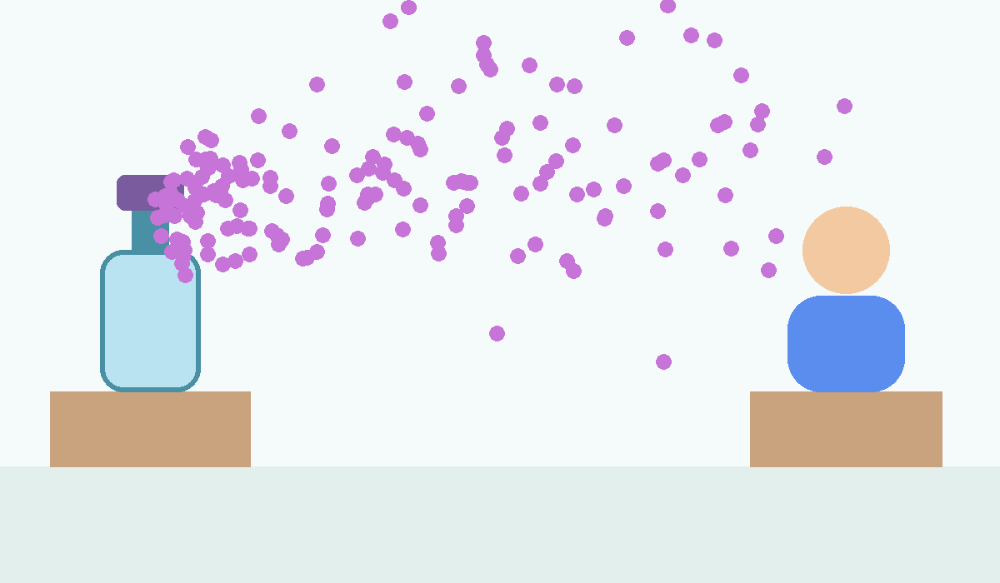
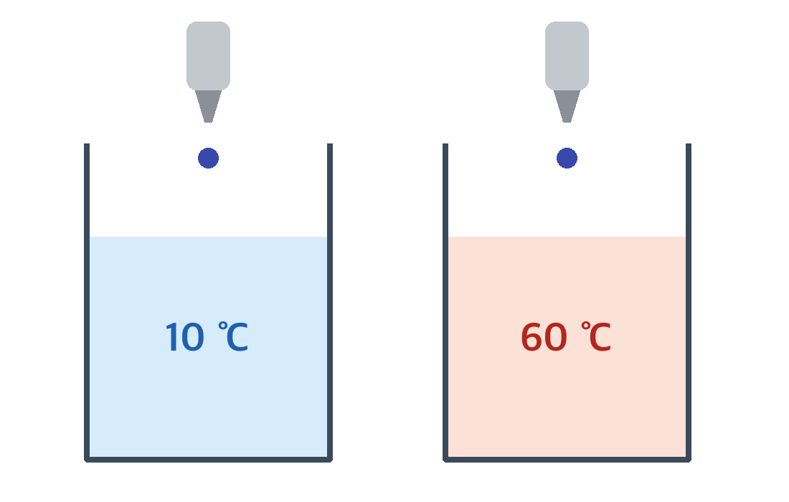

중학교 과학 · 입자의 운동
냄새는 어떻게 퍼질까?
확산과 입자의 운동
학습 목표
- 확산 현상을 입자의 운동으로 설명할 수 있다.
- 온도에 따라 확산 빠르기가 달라지는 까닭을 설명할 수 있다.
교실 앞에서 향수 뚜껑을 열면?
교실 앞 교탁에서 향수병 뚜껑을 열면
잠시 뒤 맨 뒷자리 학생도
냄새를 맡을 수 있다.
창문을 모두 닫아 바람이 없는데도
냄새가 퍼지는 이유는 무엇일까?

확산이란?
확산: 물질을 이루는 입자가 스스로 움직여
다른 물질 속으로 퍼져 나가는 현상
입자는 끊임없이 스스로 움직인다.
그래서 확산이 일어난다.
생활 속 확산의 예
- 향수향수 냄새가
방 안에 퍼진다.
- 잉크물에 잉크를 떨어뜨리면
물 전체로 퍼진다.
- 티백티백을 넣은 물의 색이
점점 진해진다.
잉크가 퍼지는 모습을 입자로 나타내면
잉크를 떨어뜨린 뒤 시작
시작1분3분5분
잉크 입자 36개
물 입자 90개
물 입자 하나가
1분 동안 지나온 길
잉크 입자와 물 입자가 모두 스스로 움직인다.
그래서 시간이 지나면 잉크 입자가 물 전체에 고르게 퍼진다.
실험: 물의 온도와 확산
준비물: 비커 2개, 찬물(10 ℃), 따뜻한 물(60 ℃),
잉크, 스포이트, 초시계
- 비커 2개에 찬물과 따뜻한 물을 200 mL씩 담는다.
- 물이 잔잔해질 때까지 1분 동안 기다린다.
- 두 비커에 잉크를 한 방울씩 동시에 떨어뜨린다.
- 잉크가 비커 전체에 고르게 퍼질 때까지
걸린 시간을 잰다.
- 결과를 표에 기록한다.
※ 뜨거운 물에 손을 데지 않게 조심한다.

비커를 흔들거나 저으면 확산이 아니라 섞기가 된다.
잉크는 두 비커에 동시에 떨어뜨린다.
실험 결과 (예시)
| 물의 온도 (℃) | 10 | 20 | 40 | 60 |
|---|
잉크가 고르게
퍼진 시간 (초) | 360 | 260 | 160 | 110 |
|---|
물의 온도가 높을수록
잉크가 퍼지는 데 걸리는 시간이 짧다.
※ 실제 실험값은 비커 크기, 잉크 양에 따라 달라질 수 있다.
왜 따뜻한 물에서 더 빨리 퍼질까?
물의 온도 시작
시작20 ℃40 ℃60 ℃
온도가 높다?
↓
입자의 운동이 활발하다?
↓
확산이 빠르다?
진한 파란 선: 입자 6개가 10초 동안 돌아다닌 길(모형) · 그래프의 점: 표의 값
온도 막대를 밀면
입자와 그래프가 움직인다
온도가 높을수록 입자 운동이 활발해서 확산이 빠르다.
어디에서 가장 빨리 퍼질까?
냄새 입자가 지나가는 곳
부딪힌 횟수 ? · 처음 자리에서 멀어진 거리 ? (모형)
오른쪽에서 진공 · 기체 · 액체 가운데
하나를 고르면 냄새 입자가 출발한다
확산은 액체보다 기체에서 더 빠르게 일어난다.
진공에서는 방해하는 다른 입자가 없어 가장 빠르다.
확인 문제 1
다음 중 확산으로 설명할 수 있는 현상이 아닌 것은?
확인 문제 2
다음 현상을 확산과 증발로 분류해 보자.
확산
증발
ㄱ. 꽃향기가 정원 전체에 퍼진다.
ㄴ. 어항의 물이 조금씩 줄어든다.
ㄷ. 물에 설탕을 넣으면 저어 주지 않아도 물 전체가 달아진다.
ㄹ. 손등에 바른 알코올이 금방 마른다.
ㅁ. 모기향 냄새가 방 안에 퍼진다.
ㅂ. 마당에 뿌린 물이 마른다.
확산: ㄱ, ㄷ, ㅁ · 증발: ㄴ, ㄹ, ㅂ
정리
- 확산: 입자가 스스로 움직여 퍼져 나가는 현상
- 온도가 높을수록 입자 운동이 활발해서
확산이 빠르다.
- 확산 빠르기: 진공 > 기체 > 액체
다음 시간: 증발